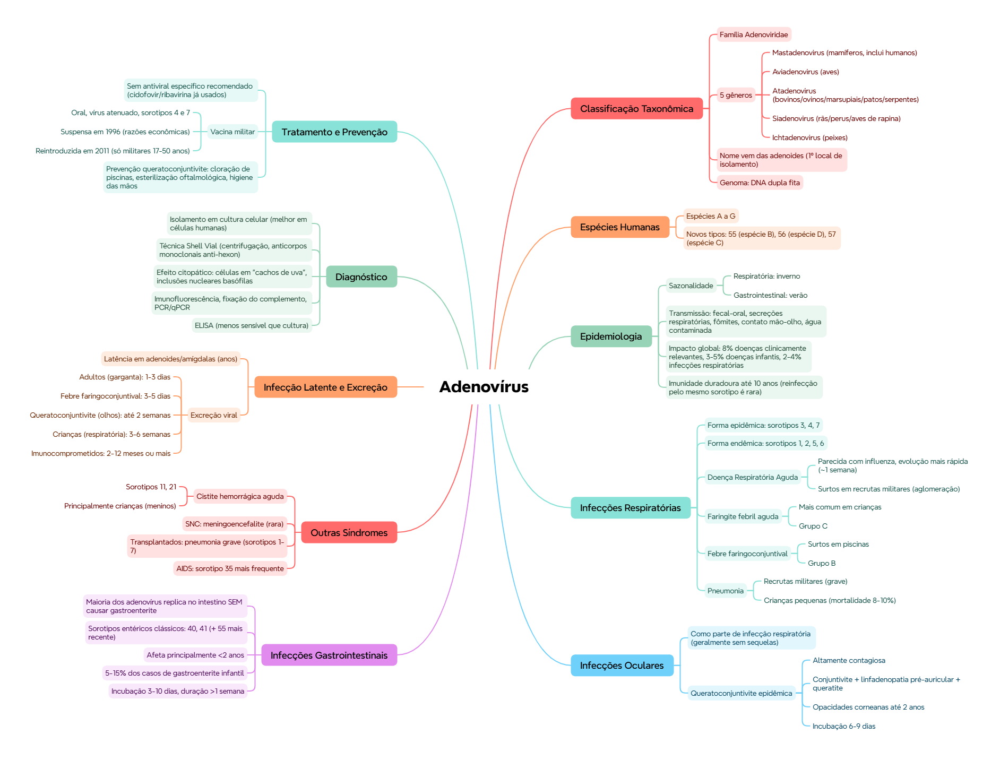

ClinicusMed · Dossiê Clinicus — Padrão de Excelência
Nv. 1
0 XP
🎯 O que você vai conseguir fazer depois desse capítulo
Classificar o adenovírus taxonomicamente e explicar a origem do nome
Descrever as principais síndromes clínicas: respiratória, ocular, GI, urinária
Associar serotipos específicos a cada síndrome clínica
Reconhecer o padrão de infecção latente e excreção prolongada
Descrever o diagnóstico laboratorial, incluindo o efeito citopático característico
Conhecer a história da vacina militar contra adenovírus
🔬 Classificação taxonômica e origem do nome
Família Adenoviridae, dividida em 5 gêneros:
Gênero
Infecta
Mastadenovirus
Mamíferos (inclui os adenovírus humanos)
Aviadenovirus
Aves
Atadenovirus
Bovinos, ovinos, marsupiais, patos e serpentes
Siadenovirus
Rãs, perus e aves de rapina
Ichtadenovirus
Peixes
💭 O nome "adenovírus" vem de onde eles foram isolados pela primeira vez: as adenoides (amígdalas) humanas — daí o nome.
Genoma: uma única molécula de DNA de dupla fita (dsDNA).
🧬 Adenovírus humanos — espécies
Classificados nas espécies A, B, C, D, E, F e G. Novos tipos propostos: tipo 55 (espécie B), tipo 56 (espécie D), tipo 57 (espécie C).
📌 O que o professor cobra nesta seção: a associação de cada espécie/grupo com a síndrome clínica que ela causa (veja tabela mais abaixo) — é um dos pontos mais testáveis do capítulo inteiro.
🌍 Epidemiologia e transmissão
Tipo de infecção
Sazonalidade
Respiratória
Mais frequente no inverno
Gastrointestinal (entérica)
Mais frequente no verão
Vias de transmissão: fecal-oral (principal em crianças), secreções respiratórias, fômites, contato mão-olho (infecções oculares), água contaminada (piscinas).
Impacto global: ~8% de todas as doenças clinicamente relevantes no mundo, 3-5% das doenças infecciosas na infância, 2-4% das infecções respiratórias na população geral.
🟢 Padrão de imunidade: a imunidade contra adenovírus é duradoura, podendo persistir até 10 anos — por isso reinfecções pelo mesmo sorotipo são raras.
🫁 Infecções respiratórias — as mais frequentes
Forma
Sorotipos
Epidêmica
3, 4 e 7
Endêmica
1, 2, 5 e 6
Doença Respiratória Aguda: quadro parecido com influenza, mas com evolução mais rápida (~1 semana). Sintomas: tosse, congestão nasal, rinorreia, febre, calafrios, mal-estar, cefaleia, mialgias.
🏥 Surtos epidêmicos são frequentes em acampamentos militares e recrutas jovens — ambientes com aglomeração e treinamento intenso, favorecendo transmissão por aerossóis.
Faringite febril aguda: mais comum em crianças, geralmente causada por adenovírus do grupo C.
Febre faringoconjuntival: faringite + conjuntivite, epidemias associadas a piscinas, geralmente causada por adenovírus do grupo B.
Pneumonia: em recrutas militares (complicação grave); em crianças pequenas (mortalidade de 8-10%).
👁️ Infecções oculares — 2 formas
Como parte de infecções respiratórias — geralmente sem sequelas
Características da queratoconjuntivite epidêmica: conjuntivite aguda, linfadenopatia pré-auricular, queratite posterior, podendo deixar opacidades subepiteliais corneanas por até 2 anos. Período de incubação: 6-9 dias.
🫃 Infecções gastrointestinais
Muitos adenovírus se replicam na mucosa intestinal e são eliminados nas fezes, mas a maioria não causa gastroenterite.
Sorotipos associados à gastroenterite: 40 e 41 (adenovírus entéricos clássicos), 55 (descrito mais recentemente). Afetam principalmente crianças menores de 2 anos, representando 5-15% dos casos de gastroenterite infantil.
Parâmetro
Valor
Incubação
3-10 dias
Duração
>1 semana
Sintomas predominantes
Diarreia (mais intensa que os vômitos), febre, sintomas respiratórios frequentes
🩸 Outras síndromes — urinária, SNC, imunocomprometidos
Cistite hemorrágica aguda — sorotipos 11 e 21, afeta principalmente crianças (especialmente meninos), vírus detectável na urina
SNC — raro, mas há casos relatados de meningoencefalite (isolamento no líquor/tecido cerebral)
Transplantados — complicação mais comum é pneumonia grave, geralmente sorotipos 1-7
Pacientes com AIDS — adenovírus tipo 35 é o mais frequente
💡 Adenovírus infecta pacientes imunocomprometidos com frequência, mas MENOS que herpesvírus — é um detalhe comparativo que a prova gosta de testar.
🔒 Infecção latente e excreção prolongada
Alguns adenovírus podem permanecer como infecção latente por anos nas adenoides e amígdalas, sendo eliminados pelas fezes por meses após a infecção inicial.
Isolamento viral em cultura celular — melhor em células humanas. Técnica Shell Vial: centrifugação da amostra diretamente sobre a célula, permite diagnóstico mais rápido, detecção com anticorpos monoclonais contra o hexon.
💡 Efeito citopático característico: células arredondadas, aumentadas de tamanho, agrupadas como "cachos de uva", com inclusões nucleares basófilas — uma imagem clássica de prova prática/lâmina.
Métodos de identificação/tipificação: imunofluorescência, fixação do complemento, inibição da hemaglutinação, neutralização, hibridização de DNA, padrões de restrição, PCR e PCR quantitativo.
Diagnóstico direto: microscopia eletrônica em fezes, imunofluorescência em secreções nasofaríngeas, ELISA (kits comerciais, menos sensíveis que a cultura celular).
Sorologia: pouco usada no diagnóstico clínico; mais útil em estudos epidemiológicos.
💊 Tratamento e prevenção
Tratamento antiviral: cidofovir e ribavirina já foram utilizados, mas não existe antiviral específico recomendado atualmente.
🏥 Vacina militar: vacina oral de vírus atenuado (sorotipos 4 e 7), evitava a doença respiratória sem disseminar. Foi suspensa em 1996 por razões econômicas, e reintroduzida em 2011, com uso exclusivo em militares de 17 a 50 anos.
Prevenção da queratoconjuntivite epidêmica: cloração adequada de piscinas, esterilização rigorosa de equipamentos oftalmológicos, higiene rigorosa das mãos.
✅ O que você deve lembrar
Grupo B = febre faringoconjuntival (piscinas). Grupo C = faringite febril aguda em crianças. Sorotipos 40/41 = gastroenterite. Sorotipos 11/21 = cistite hemorrágica.
⚠️ Erro comum
Achar que a maioria dos adenovírus que replicam no intestino causa gastroenterite — na verdade a MAIORIA não causa, só sorotipos específicos (40, 41, 55).
⚡ Questão rápida
Por que surtos de adenovírus respiratório são tão frequentes em recrutas militares?
Porque ambientes de treinamento militar combinam aglomeração de pessoas, treinamento físico intenso e contato próximo prolongado — condições ideais para a transmissão por aerossóis e inalação do vírus, favorecendo surtos epidêmicos (sorotipos 3, 4 e 7 são os mais associados a essa forma epidêmica).
🧠 Autoexplicação
Por que faz sentido que a imunidade duradoura contra adenovírus (até 10 anos) torne as reinfecções pelo MESMO sorotipo raras, mas não impeça infecções por adenovírus em geral ao longo da vida?
A imunidade adquirida contra vírus costuma ser, em grande parte, específica ao sorotipo (ou tipo antigênico) que causou a infecção original — os anticorpos neutralizantes produzidos reconhecem estruturas específicas daquele sorotipo em particular. Como existem dezenas de sorotipos diferentes de adenovírus (classificados nas espécies A-G, incluindo tipos recém-descritos como 55, 56, 57), uma pessoa que desenvolveu imunidade duradoura contra o sorotipo que a infectou aos 5 anos continua totalmente suscetível a um sorotipo diferente que ela nunca encontrou antes. É exatamente por isso que uma pessoa pode ter múltiplas infecções por adenovírus ao longo da vida (por sorotipos diferentes), mesmo tendo imunidade de até 10 anos contra qualquer sorotipo específico já enfrentado — a diversidade de sorotipos circulantes é o que sustenta a possibilidade de reinfecções "novas", apesar da imunidade duradoura contra cada sorotipo individual.
⚠️ Onde todo mundo escorrega
Confundir os 5 gêneros de Adenoviridae e seus hospedeiros — Mastadenovirus é o único que infecta humanos
Trocar grupo B (febre faringoconjuntival, piscinas) com grupo C (faringite febril aguda, crianças)
Achar que a maioria dos adenovírus entéricos causa gastroenterite — só sorotipos específicos (40, 41, 55) causam
Esquecer que adenovírus tipo 35 é o mais associado a pacientes com AIDS especificamente
Confundir a duração da vacina militar (suspensa em 1996, reintroduzida em 2011, só pra militares 17-50 anos)
📚 Se você só puder lembrar de 7 coisas
Família Adenoviridae, 5 gêneros — só Mastadenovirus infecta humanos. Nome vem das adenoides
Genoma: dsDNA. Espécies humanas: A-G
Respiratória (mais frequente): grupo C = faringite em crianças. Grupo B = febre faringoconjuntival (piscinas)
Sorotipos 40/41/55 causam gastroenterite (5-15% dos casos infantis) — a maioria dos outros NÃO causa
Sorotipos 11/21 = cistite hemorrágica aguda
Efeito citopático: células em "cachos de uva", inclusões nucleares basófilas
Sem antiviral específico recomendado. Vacina militar (sorotipos 4/7) só pra 17-50 anos
🩺 Caso Clínico Progressivo — Surto em Quartel Militar
Vamos acompanhar um surto de doença respiratória entre recrutas de um quartel militar. O caso evolui em 3 níveis — clica em cada um pra ver como as coisas vão se desenrolando.
🧠 Mapa Mental — Adenovírus
Visão geral do capítulo em formato visual — ideal pra revisão rápida antes da prova. O conteúdo completo, com explicações e exemplos, está no Guia de Estudo.

🃏 Flashcards — SM-2 real + interface Anki
O sistema guarda, no seu navegador, quais cards você já sabe bem e quais precisam voltar mais cedo — cada vez que você avalia um card, ele recalcula quando ele deve voltar.
Cartão 1 / 0Dominados: 0
PERGUNTA
RESPOSTA
✅ Banco de Questões Comentadas
10 questões, do mais básico ao mais puxado. Escolhe uma alternativa, depois clica em "Ver comentário completo" — vale a pena ler até quando você acerta, porque o comentário explica cada alternativa, não só a certa.